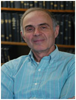
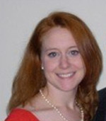
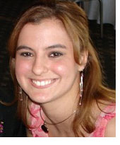
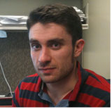

Personnel

Dr. Theodore Christ
Principle Investigator
Dr. Theodore Christ is an Associate Professor in the Department of Educational Psychology and Co-Director of the Research Institute on Problem Solving (RIPS) at the University of Minnesota. His primary areas of research, teaching, and service relate to assessments used to support problem solving, response to intervention and progress monitoring. Dr. Chris has received more than $4 million in funding from the US Department of Education for research and development of assessments, which include Curriculum Based Measurement (CBM), Direct Behavior Ratings (DBR), and the Computer-Based Assessment System for Reading (CBAS-R). His research is reported in numerous peer-refereed outlets, national meetings, and book chapters. In 2008, Dr. Christ received the Lightner Witmer Award from Division 16 of the American Psychological Association for “exceptional potential and promise to contribute knowledge and professional insights that are of uncommon and extraordinary quality.”

Dr. David Weiss
Co-Principal Investigator
Dr. David Weiss is a faculty members in the Department of Psychology at the University of Minnesota. His primary area of interest is computerized adaptive testing (CAT). Most contemporary CAT procedures are based on advanced psychometric models based in item response theory (IRT). Therefore, Dr. Weiss’ interests extend into methodological issues in IRT as they relate to CAT. One topic of particular interest in IRT is that of “person fit,” which is concerned with determining whether a given individual who is being measured on a set of test items is responding in accordance with a specified IRT model. Because CATs are delivered by computers, his third area of interest is mode effects in test administration

Allison McCarthy
Research Assistant
Allison McCarthy, M.A., is a fourth year school psychology graduate student from Maryland. She has worked on the project since Fall, 2007. Allison's primary role on the project is item development and data collection coordination. Her research interests include reading and assessment of reading.

Amanda Pike
Research Assistant
Amanda Pike is a second year school psychology graduate student from Kentucky. She joined the C-BAS staff in September of 2009. Amanda’s primary role on the project is item development, test construction, and writing reports and manuals. Her research interests include reading and reading assessment, with a specific interest in expository comprehension.

Ethan Van Norman
Research Assistant
Ethan Van Norman is a first year school psychology graduate student from Illinois. He began working on the project in September of 2010. Ethan's primary role on the project is assisting with data collection, data management and analysis, and writing reports and manuals. His research interests include measurement issues of school based assessments.
Zoheb Borbora
Research Assistant
Zoheb H. Borbora is a second year school Computer Science graduate student from India. He has worked on the project since Fall 2009. Zoheb's primary role on the project is developing the web-based C-BAS system for student assessment. His research interests include machine learning and computational social science.